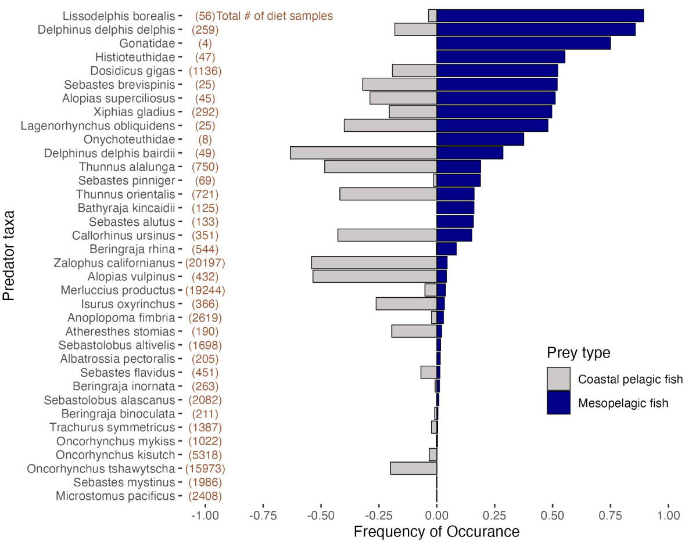
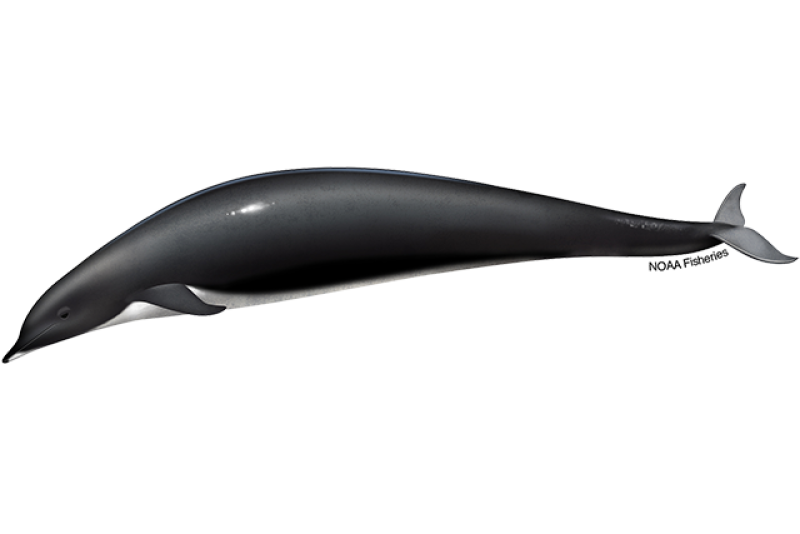
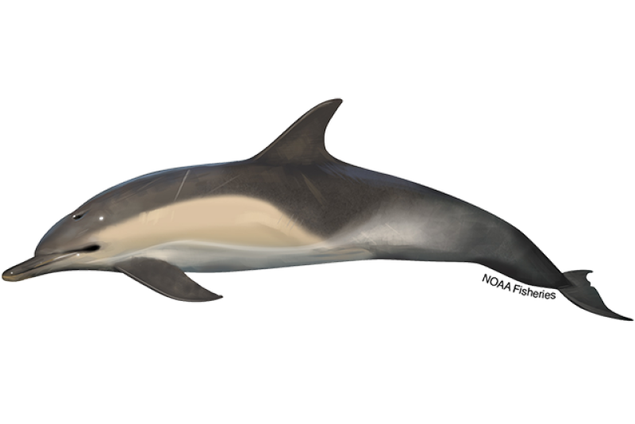
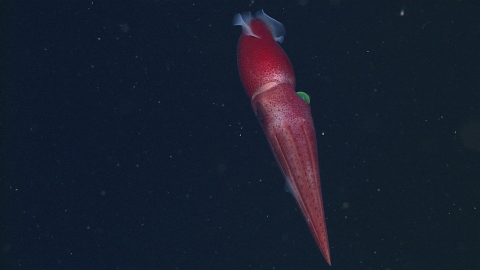
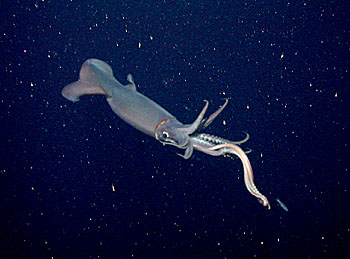

species_scale %>%
# Only retain predator species that ate mesopelagic fish
filter(meso_fo > 0) %>%
# Flip sign of coastal pelagic FO (for plotting purposes)
mutate(cpf_fo = -cpf_fo,
# Format name and sample size
label = sprintf("%s (%d)", predator_scientific_name, n),
# Order labels by descending mesopelagic FO
label = fct_reorder(label, meso_fo)) %>%
# Rename *_fo columns to human-readable
rename(`Coastal pelagic fish` = cpf_fo,
`Mesopelagic fish` = meso_fo) %>%
# Pivot frequency of occurence columns to long format
pivot_longer(ends_with("Fish"), values_to = "fo") %>%
# Create column chart
ggplot(aes(x = fo, y = label, fill = name)) +
geom_col(color = "grey10") +
scale_x_continuous("Frequency of occurrence", limits = c(-1, 1)) +
labs(y = "Predator taxa") +
scale_fill_manual("Prey type", values = c("grey70", "navy")) +
theme_bw() +
theme(axis.text.y = element_text(face = "italic"),
legend.position = "inside",
legend.position.inside = c(0.99, 0.01),
legend.justification = c(1, 0))
ggsave("meso_cpf_fo.png", width = 8, height = 6, units = "in")PRST101: Intro to Data
Welcome the Probability and Statistics track. By the end of this module, you’ll learn how to:
Define samples and populations
Describe samples using summary statistics
Simulate samples to explore patterns
Pre-class preparation
Set up the PRST101 module on your computer (see Module Setup and Submission). There you’ll find the guided notes and exercises to accompany these recorded lectures.
Lectures
Samples and populations
Summary statistics
Simulation
Welcome to the Twilight Zone
BONUS CONTENT: Interview with Dr Ily Iglesias, lead author of the paper this activity is based on.
In-class activity
Dr Iglesias investigates the connections between epipelagic (near surface) and mesopelagic (mid-ocean, 200-1000m) ecosystems. One chapter of her PhD (Iglesias et al. 2023) investigated the frequency of occurrence (FO) of mesopelagic fishes in marine predators’ stomachs. This work robustly demonstrated that many ecologically, culturally, and economically important marine predators frequently consume mesopelagic prey.
In this module, you’ll replicate part of Dr Iglesias’ analysis and use simulations to explore how sample sizes affect accuracy.
Frequency of occurrence
Dr Iglesias’ paper used data from the California Current Trophic Database (Bizzarro et al. 2023), which contains >100k diet samples from ~140 marine predators collected over 50 years. In the course companion package, you’ll find the data frame cctd_meso, which contains the relevant portions of the database. We’ll use those data to repeat the data summarizing steps required to create the figure below (Fig. 1B in the original paper).

Predator-level summary
Each row in cctd_meso represents one prey item from a diet sample. Therefore an individual predator may be represented by multiple rows in the database. The columns meso_prey and cpf_prey indicate whether the prey item was a mesopelagic or coastal pelagic fish species.
P1 Filter cctd_meso to rows representing the predator with id 99112. What was species was the predator? How many prey items were in their diet sample? How many of those prey were mesopelagic or coastal pelagic fish species?
P2 Summarize cctd_meso at the predator level (i.e., each row in the summary should represent one predator), indicating whether the predator’s diet sample contained mesopelagic and/or coastal pelagic fish species. Call the summary columns any_meso and any_cpf.
Tip
The summary function any() will help here.
Species-level summary
The summary statistic used by Iglesias et al. was frequency of occurrence (FO). At the species level, the mesopelagic FO is the proportion of diet samples (within a species) that contained any mesopelagic fish. The same principle applies to the coastal pelagic fish FO.
P3 Using the data frame you created in P2, create a species-level summary that contains columns for mesopelagic FO (meso_fo), coastal pelagic fish FO (cpf_fo), and predator sample size (n).
Tip
One of the grouping variables you’ll need for P3 may not be in your response to P2. If necessary, revisit your solution and add it in.
P4 How many predator species had a mesopelagic FO greater than 0.5? Which of those predator species had the largest sample size?
The code chunk below creates a figure very similar to the original version in the Iglesias et al. paper. I encourage you to try to adapt it to work with the data frame you created in P3!
Simulating samples
The CCTD contains a sample of the food web in the California Current. As you learned in the pre-class videos, samples have the potential to mislead your inferences about the population. Here, we’ll investigate that potential using simulation.
Since we’ll be using random numbers, we first have to set the seed to make sure we all get the same result. Run the following code to set the seed to 123.
set.seed(123)How sensitive are rankings to sampling?
Two species consumed mesopelagic fish more frequently in the CCTD sample than any other taxa: Lissodelphis borealis and Delphinus delphis.


P5 In the sample, Lissodelphis had a slightly higher mesopelagic FO than Delphinus. Do you think that relative order reflects the true difference in the population? Why or why not?
Let’s assume the mesopelagic FO for these two species in the sample is an accurate reflection of the population. I.e., we will assume 89.3% of all Lissodelphis borealis stomachs and 85.7% of all Delphinus delphis stomachs in the California Current contain mesopelagic fish. We’re going to simulate out how often repeating the CCTD sample would give us the wrong ranking. In other words, we’ll ask how often our samples would show a higher mesopelagic FO for Delphinus than Lissodelphis, even though the reverse is true in the population
P6 Fill in the blanks below to simulate 1000 new samples. Keep the size and probabilities the same as the original sample. Of the 1000 simulated samples, what fraction show the wrong order (i.e., mesopelagic FO greater in Delphinus than Lissodelphis)?
lissodelphis_samples <- rbinom(1000,
size = ???,
prob = ???)
lissodelphis_fo <- ???
delphinus_samples <- rbinom(1000,
size = ???,
prob = ???)
delphinus_fo <- ???
wrong_order <- ???P7 How does your result in P6 influence your confidence in the sample result that Lissodelphis consume mesopelagic prey more frequently than Delphinus?
Sample size effects
Mesopelagic fish were found in the stomachs of Histioteuthidae and Dosidicus gigas at very similar frequencies - 0.553 compared to 0.522. The sample contained far more Dosidicus than Histioteuthidae, though - 1136 Dosidicus compared to 47 Histioteuthidae.


P8 If you were to get new samples of the same size for these two taxa, which mesopelagic FO do you think would change more? Why?
P9 Generate 1000 new simulated samples for Histioteuthidae and Dosidicus gigas, keeping the sample sizes and probabilities the same.
P10 What’s the mean mesopelagic FO of the 1000 Histioteuthidae simulated samples? How about Dosidicus gigas? How do these means compare to the original sample?
P11 What’s the standard deviation of mesopelagic FO across simulated samples for the two taxa?
P12 How frequently did Histioteuthidae mesopelagic FO fall outside the range 0.45 - 0.65? How about Dosidicus gigas?
P13 Based on your answers to P10-P12, what effect does sample size have on sample accuracy?
Recap and wrap up
In this module you learned how to make statistical summaries and use simulation to explore patterns in samples. These skills form the basis for statistical inference. In your career, you’ll use these tools frequently to test hypotheses and reach informed conclusions that account for the uncertainty we encounter as scientists.
Once you’ve completed the pre-class exercises and in-class activity, submit this module on GitHub.
References
Bizzarro, Joseph J., Lynn Dewitt, Brian K. Wells, K. Alexandra Curtis, Jarrod A. Santora, and John C. Field. 2023. “A Multi-Predator Trophic Database for the California Current Large Marine Ecosystem.” Scientific Data 10 (1). https://doi.org/10.1038/s41597-023-02399-2.
Iglesias, Ilysa S., Jarrod A. Santora, Jerome Fiechter, and John C. Field. 2023. “Mesopelagic Fishes Are Important Prey for a Diversity of Predators.” Frontiers in Marine Science 10 (July). https://doi.org/10.3389/fmars.2023.1220088.